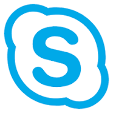
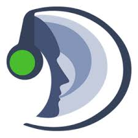

Skype (укр. Скайп) — це пропрієтарне ПЗ для інтернет-телефонії VoIP, створене двома підприємцями Нікласом Зеннстрьомом та Янусом Фріїсом, у співпраці естонцями з Ахті Хейнла, Прійтом Касесалу і Яаном Таллінном, що розробили бекенд, який також був використаний в файлообмінній мережі Kazaa. Вона конкурує з існуючими відкритими VoIP протоколами, такими як SIP, IAX, та H.323. Група Skype, придбана компанією eBay у жовтні 2005, розташована в Люксембурзі, з офісами в Лондоні, Таллінні і Празі. 2009 eBay продала більшу частину акцій Skype групі інвестиційних фондів. Від 2011 власником Skype є Microsoft. Skype після випуску почав дуже швидко зростати у всіх напрямках: за популярністю, в розробці програмного забезпечення, в обох сервісах — безплатному й платному. Комунікаційна система Skype відома завдяки широкому спектру її особливостей, зокрема, безкоштовній голосовій та відео-конференціях, та завдяки її здатності використовувати децентралізовану P2P (peer-to-peer) технологію для подолання звичайних проблем із брандмауером та NAT (Network Address Translation). Але на початку 2012 Корпорація Microsoft, новий власник Skype, відмовилася від принципу децентралізації й замінила розподілену P2P-мережу на мережу власних серверів. За даними дослідницької компанії TeleGeography, 2008 року Skype став найбільшим оператором міжнародного голосового зв'язку — його частка від загального обсягу розмов склала 8 %. Станом на 2011 рік щомісячно послугами Skype користуються до 140 мільйонів людей по всьому світу.
 «Viber»
(укр. Вайбер) — застосунок VoIP для смартфонів, що працюють на платформах Android, BlackBerry OS, iOS, Symbian, Windows Phone, Bada і комп'ютерів з операційною системою Windows, OS X або Linux.
Інтегрується з адресною книгою та авторизується за номером телефону. Дозволяє здійснювати безкоштовні дзвінки (оплата тільки за рахунок інтернет-трафіку) високої якості між смартфонами з встановленим вайбером, а також передавати текстові повідомлення, зображення, відео та аудіо повідомлення.
«Viber»
(укр. Вайбер) — застосунок VoIP для смартфонів, що працюють на платформах Android, BlackBerry OS, iOS, Symbian, Windows Phone, Bada і комп'ютерів з операційною системою Windows, OS X або Linux.
Інтегрується з адресною книгою та авторизується за номером телефону. Дозволяє здійснювати безкоштовні дзвінки (оплата тільки за рахунок інтернет-трафіку) високої якості між смартфонами з встановленим вайбером, а також передавати текстові повідомлення, зображення, відео та аудіо повідомлення.
WhatsApp — пропрієтарний месенджер для смартфонів. Дозволяє пересилати текстові повідомлення (дописи), зображення, відео та аудіо. Клієнт працює на платформах Android, BlackBerry OS, BlackBerry 10, iOS, Series 40, Symbian (S60) і Windows Phone. В травні 2016 року був випущений клієнт для комп'ютерів під керуванням ОС MS Windows версії 8 та вище і MacOS версії 10.9 та вище. Компанію, яка створила месенджер, заснували у 2009 році американський програміст українського походження (фастівчанин) Ян Кум і Браян Ектон у місті Санта-Клара, штат Каліфорнія. У лютому 2014-го Facebook оголосив про намір придбати WhatsApp, у жовтні 2014 операцію з придбання мобільного месенджера WhatsApp вартістю $19 млрд було завершено. Ця купівля стала найбільшою угодою в індустрії стартапів, перевершивши найбільше до цього придбання Facebook — покупку сервісу Instagram за $1 млрд.
Teamspeak - комп'ютерна програма, призначена для голосового спілкування в мережі Інтернет допомогою технології VoIP. Від класичного телефону відрізняється практично необмеженою кількістю абонентів, що розмовляють одночасно. Найбільше це схоже на багатоканальну рацію, в якій можна одночасно користуватися декількома каналами. При цьому доступні всі опції, розроблені раніше для зручності використання рацій в польових (бойових) умовах. Програми цього типу призначені насамперед для геймерів, але можуть використовуватися скрізь, де необхідний голосовий зв'язок та координація великої групи людей. Варто відзначити, що подібні сервіси можуть бути реалізовані всередині самих ігрових додатків, де спілкування учасників і координація дій вкрай необхідні для ігрового процесу. Існують програми c схожим набором функцій, такі як Ventrilo, Skype, Roger Wilco, Mumble, TeamTalk, Raidcall. Scott Jennings, Alexander Macris. — For Dummies, 2005. — P. 72. — ISBN 9780471752738. Для повноцінної роботи з TeamSpeak, користувачеві потрібні навушники або колонки і мікрофон. Для вимови фраз доступні два способи активації мікрофону: кнопкою клавіатури або миші (англ. push to talk ) і голосом (англ. voice activation). Активував мікрофон учасник відзначається індикатором яскраво синього кольору, у той час як мовчить користувач має значок темно синього кольору. Учасники також можуть ставити собі статуси, що відключають прийом або передачу звуку, або просто інформують про те , що людина вийшла. Щоб користуватися TeamSpeak, необхідно знати адресу сервера, на якому встановлена серверна частина програми, і пароль, якщо він потрібний для з'єднання. Під'єднавшись до сервера, користувач потрапляє в канал за замовчуванням, якщо при підключенні не був вказаний шлях в конкретний підканал. Весь сервер являє собою кореневу ієрархічну систему каналів і підканалів, кожен з яких може мати власного модератора або супермодератора, а також свій рівень доступу, відмінний від інших каналів. Процес спілкування являє собою конференцію в реальному часі, в якій говорять можуть вимовляти репліки одночасно, часом заглушаючи один одного. Щоб уникнути цього, кожен учасник може заблокувати особисто для себе звук від іншого учасника.
 Discord
(Дискорд) є пропієтарною freeware VoIP програмою, яка була розроблена для ігрових спільнот. Дискорд має підтримку на Windows, macOS, Android, iOS, Linux та на веб-переглядачах.
Станом на грудень 2017 року Дискорд має 87 мільйонів зареєстрованих користувачів.
Уперше концепція Дискорду була озвучена CEO Джейсоном Цитроном, який створив OpenFeint, соціальну платформу для мобільних ігор. Згодом він продав OpenFeint GREE у 2011 році за $104 мільйони, які він використав для створення Hammer & Chisel, студії розробки ігор, у 2012 році. Їхнім першим продуктом був Fates Forever, що було видано у 2014, щодо якої Цитрон очікував стати першою MOBA грою на мобільних платформах, але вона не була комерційно успішною через її низьку популярність. Проте, під час виробництва, Цитрон примітив труднощі, яка мала його команда, коли намагалася грати в інші репрезентати́вні ігри, як Final Fantasy XIV та League of Legends для розробки концепції ґеймплею, особливо були підмічені проблеми, які стосувалися Voice over IP. Деякі VoIP oпції змушували гравців ширити різни IP-адреси аби тільки під'єднатися, водночас інші сервіси як Skype чи TeamSpeak є ресурсомісткими та мають відомі проблеми безпеки. Це привело розробників до створення служби чату, який був більш сучасний та "дружелюбний" для користування.
Дискорд було публічно видано у травні 2015 року. Цитрон зазначав, що тільки Дискорд просувався лише за підтримки спільноти Редита, побачивши як багато сабредит-форумів заміняють IRC сервери на Дискордові. Discord отримав популярність завдяки eSports та LAN tournament гравців, а також завдяки іншим стримерам з Twitch.tv.
Discord
(Дискорд) є пропієтарною freeware VoIP програмою, яка була розроблена для ігрових спільнот. Дискорд має підтримку на Windows, macOS, Android, iOS, Linux та на веб-переглядачах.
Станом на грудень 2017 року Дискорд має 87 мільйонів зареєстрованих користувачів.
Уперше концепція Дискорду була озвучена CEO Джейсоном Цитроном, який створив OpenFeint, соціальну платформу для мобільних ігор. Згодом він продав OpenFeint GREE у 2011 році за $104 мільйони, які він використав для створення Hammer & Chisel, студії розробки ігор, у 2012 році. Їхнім першим продуктом був Fates Forever, що було видано у 2014, щодо якої Цитрон очікував стати першою MOBA грою на мобільних платформах, але вона не була комерційно успішною через її низьку популярність. Проте, під час виробництва, Цитрон примітив труднощі, яка мала його команда, коли намагалася грати в інші репрезентати́вні ігри, як Final Fantasy XIV та League of Legends для розробки концепції ґеймплею, особливо були підмічені проблеми, які стосувалися Voice over IP. Деякі VoIP oпції змушували гравців ширити різни IP-адреси аби тільки під'єднатися, водночас інші сервіси як Skype чи TeamSpeak є ресурсомісткими та мають відомі проблеми безпеки. Це привело розробників до створення служби чату, який був більш сучасний та "дружелюбний" для користування.
Дискорд було публічно видано у травні 2015 року. Цитрон зазначав, що тільки Дискорд просувався лише за підтримки спільноти Редита, побачивши як багато сабредит-форумів заміняють IRC сервери на Дискордові. Discord отримав популярність завдяки eSports та LAN tournament гравців, а також завдяки іншим стримерам з Twitch.tv.